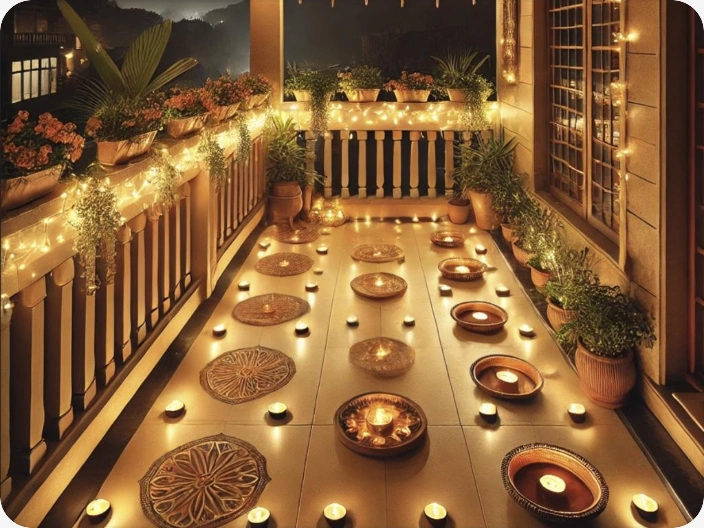
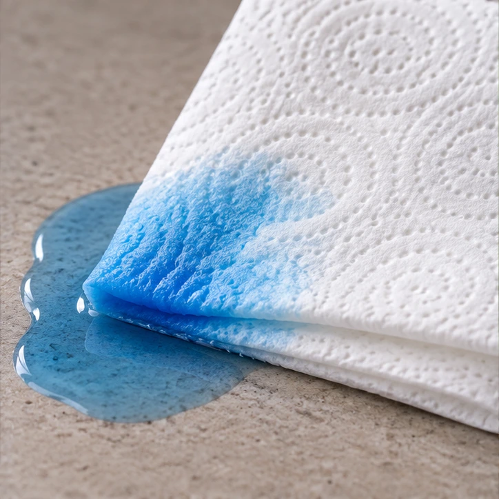
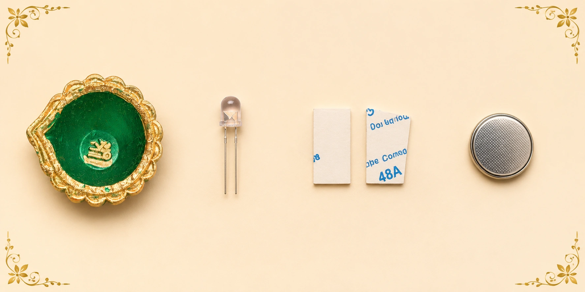

Where is the oil? Where is the flame?
Capillary action is when liquid moves through tiny spaces because of attraction between the liquid and the material around it.
Melted wax travels up the wick.

Water spreads through tiny spaces.
Capillary action helps water move through tiny tubes, along with other forces.
